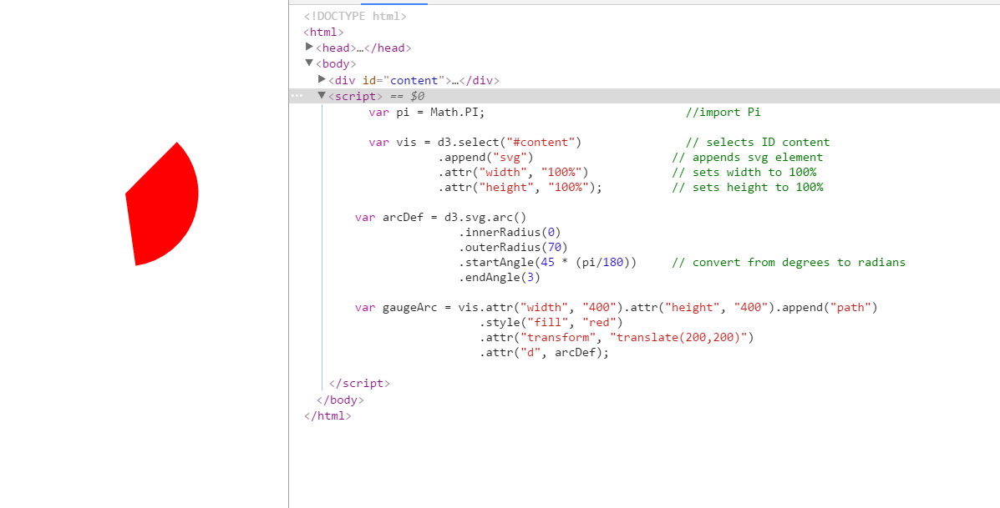
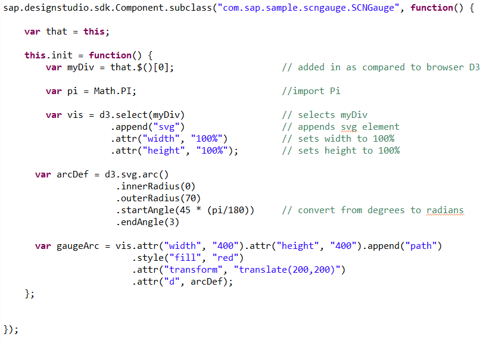
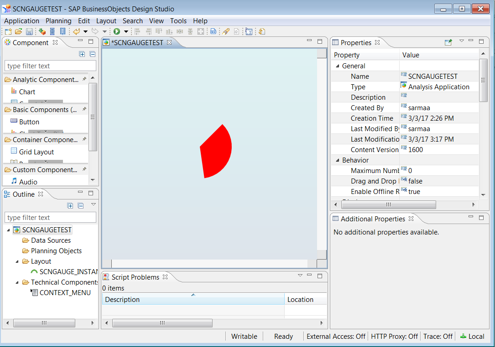

There are a ton of great D3 visualizations out there and there are some great free extensions as part of the SCN community.
However, there really isn't much crossover. This guide works through the example provided by SAP and notes the differences
between the standard browser script and the script in a Design Studio extension.
SAP does provide some standard visualizations, but rather than try to keep up with a ton of options, they have the SDK for
Design Studio. This allows you to add anything you could render in a browser with HTML/CSS/JavaScript in Design Studio dashboards.
If you would like to follow along, you need to have Design Studio and Eclipse installed. If you don't have access to these programs yet,
you should stop now.
Setup
Part 0 – Setting Up Eclipse
This section goes through some basic settings in the program and it should only need to be done once for your workspace.
These include defining a "Target Platform" of Design Studio and an "XML Catalog". The target platform assigns the testing
instance that will be opened and the XML Catalog works a bit like Intellisense for Visual Studio and warns you of conformance
errors in your XML markup.
The next part of this is importing existing projects. There are many open source extensions out there provided by SAP and SCN.
Projects should be imported and then cleaned to remove any metadata that is no longer relevant (Project-->Clean).
Part 1 – Project Creation
They recommend not creating a project from scratch and instead copying an existing project to edit the setup. Configuration
of a new project is very complex and there isn't a wizard that exists for it.
Introduction to D3 and Components
Part 2a – Your first Steps with D3
The first part of this process is to start drawing your graphics using SVG. D3 is already built into Design Studio's SDK framework.
This is a basic HTML file to use as a template. You can see D3 has been included here.
Here is the arc in the browser and the script that generates it. Since we have no data, the arc's height and width are
explicitly defined so that it will appear.

Part 2b – Getting your Arc into a Component
D3 and Require.js are not compatible, so Design Studio has a modified version of D3 built in. This is added to your project
via the contribution.xml file using the tag <stdInclude kind="d3"/>.
Here is the script for the Design Studio extension and the arc as rendered in Design Studio. The height and width are still
explicitly defined.


Differences
You can see from looking at the code for both that the differences are fairly minor, since we are not yet binding any data
to the arc. The real change is that in Design Studio it is nested inside functions and the 'div' it's assigned to is called
a little differently than normal. var that = this; gives us a bound reference to this as it refers
to the component itself, which may no longer be the scope of this as the code executes.
Properties
Right now, all that's being rendered is a static graphic. D3 is supposed to be about representing data, so the next step is to
make a list of all the properties that should be configurable. This is the list provided by the tutorial:
Configurable Properties
Property
Description
Width and Height
size of the container
Start Angle (in degrees)
starting angle of the arc, 0 is straight up and 180 is straight down
End Angle (in degrees)
finishing angle of the arc
Padding (Top/Bottom/Left/Right)
allow for buffer space on the edges of the container
Inner Radius of the Arc
0 for it to be pie shaped, greater than 0 for a cutout in the center
Outer Radius of the Arc
distance between the center of the gauge and the outside bounded edge of the arc
Centerpoint
origin, the center of the arc
Color
color of the arc
Some of the properties are related, so not all of them would need to be set and could be derived. Height and width are
standard properties of objects in Design Studio, so these would have to be set. From these, the (relative) centerpoint could be
calculated. Given set values for the padding, the outer radius could be calculated.
Part 3a – Making your Arc Configurable
//Vis definitiions
var innerRad = 0;
var width = 200;
var height = 200;
var startAngleDeg = -90;
var endAngleDeg = 90;
var colorCode = "red";
//Outer Dimensions & Positioning
var paddingTop = 10;
var paddingBottom = 10;
var paddingLeft = 10;
var paddingRight = 10;
//The total size of the component is calculated from its parts
// Find the larger left/right padding
var lrPadding = paddingLeft + paddingRight;
var tbPadding = paddingTop + paddingBottom;
var maxPadding = lrPadding;
if (maxPadding < tbPadding){
maxPadding = tbPadding;
}
var outerRad = (width - 2*(maxPadding))/2;
//The offset will determine where the center of the arc shall be
var offsetLeft = width/2;
var offsetDown = height/2;
//Don’t let the innerRad be greater than outer rad
if (outerRad < innerRad){
outerRad = innerRad;
var warningMsg = "Warning! The gauge arc has a negative radius. Please decrease the inner radius, or increase the size of the ";
warningMsg += "control. Height & width (including subtraction for padding) must me at least twice as large as Internal Radius.!";
alert(warningMsg);
}
Part 3b – Adding Properties to the Properties Pane
Part3c – The Dark Art of Property Synchronization
Part 3d – Bringing Your Properties to Life
Additional Properties Sheet
Part 4a – Introducing the Additional Properties Sheet
Part 4b – The Positioning Visualizer
Part 4c – Putting the Positioning Visualizer into the Additional Properties Sheet
Part 4d – The APS Interacting with the Canvas
Scripting API
Part 5 – Making your Component Scriptable
Data Binding
Part 6a – Adding Property Binding: Preparation
Part 6b – Adding Property Binding
Advanced Property Types Introduced in 1.6
Part 7a – Property Arrays and Complex Properties
Part 7b – Using an Object Array to Create Conditional Formatting
Advanced Polish: Guide Lines and Arcs
Part 8a – Drawing Radial Guide Lines and Arcs with D3
Part 8b – Adding Radial Guide Lines and Arcs to the Gauge Component
Advanced Polish: Adding an Indicator Needle
Part 9a – Drawing an Indicator Needle (D3)
Part 9b – Drawing an Indicator Needle in the Component
Advanced Polish: Animations
Part 10a – The “data” in Data Driven Documents
Part 10b – Transitions in D3
Part 10c – Transitions in the Component
Advanced Polish: Dynamic Text Callouts
Part 11a – D3 and the SVG Text Element
Part 11b – Dynamic Text Positioning with D3
Part 11c – Text callouts in the Component
Advanced Polish: Custom Component CSS Styling
Part 12 – Cascading Stylesheets in Custom Components
Infrastructure: RequireJS
Part 13 – RequireJS
Creating an Installer Zip File
Part 14 – Zipit ‘n Shipit
Why do I care about D3?
This guide was written as an assignment for Oregon State's CS 290 course. I selected
this topic because I am a business intelligence developer working with SAP's platforms
including BOBJ (BusinessObjects). My team is fairly new within the company and
we are quickly learning our limitations for graphical representations. I plan to
leverage what I learned from researching and writing this in development of
extensions for use with Design Studio. For those who are unfamiliar, Design Studio makes
heavy use of CSS and JavaScript.